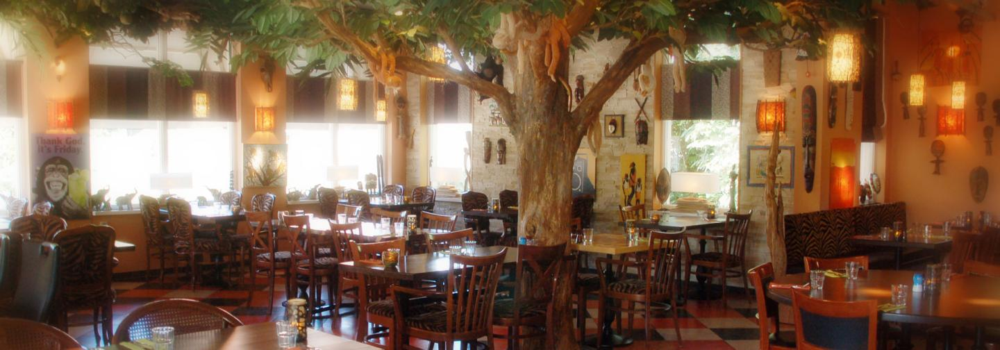
Zuid-Afrikaans restaurant in Alphen
Restaurant Aap
Kom langs en proef Afrika zoals het bedoeld is. Van bobotie en biltong tot krokodil en smoorvis.
Vrijdag, zaterdag en zondag van 17:00 tot 22:00
Zuid-Afrika in Brabant
Avontuurlijk als u durft, vertrouwd als u dat liever heeft.
Wij serveren autentieke Afrikaanse gerechten, soms met een subtiele Hollandse twist. U kiest uit een brede selectie vlees-, vis- en plantaardige gerechten. Ook voor de minder grote avonturier staan er smaakvolle Afrikaanse gerechten op het menu.
- Open keuken. U ziet de koks aan het werk. Daarom kunnen wij helaas geen honden toelaten.
- Vegan friendly. Een groot deel van de kaart is plantaardig, en er is een aparte glutenvrije kaart.
- Parkeren is geen gedoe. Een grote gratis parkeerplaats direct voor de deur.
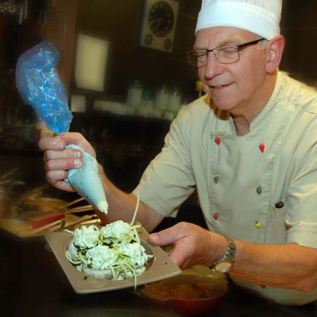
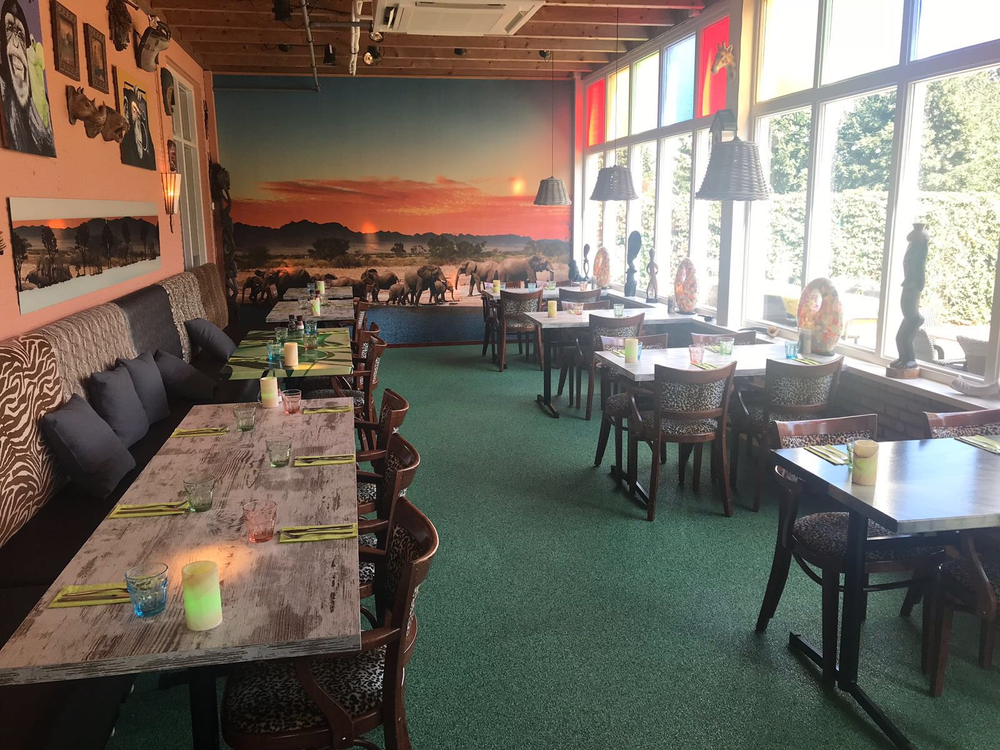
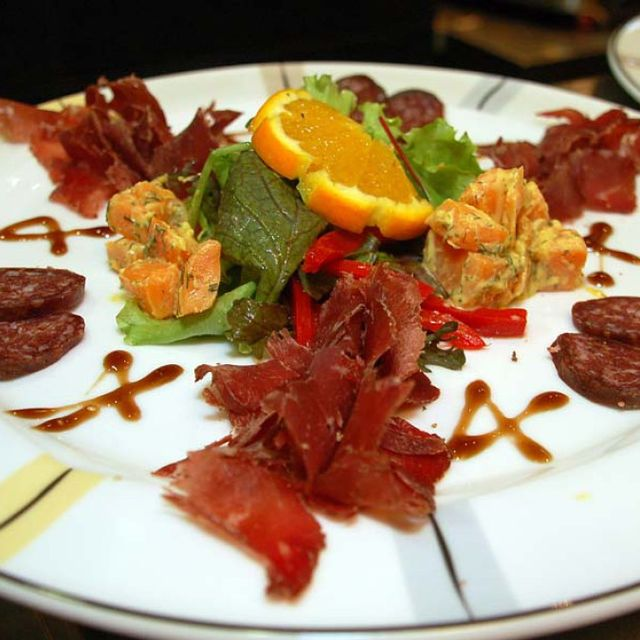
Krismis 2026
Kerst vieren in de jungle: op 1e en 2e kerstdag bent u vanaf 16.00 uur welkom voor het driegangen kerstmenu.
Het kerstmenu kost 55,-- voor 3 gangen; het kinderkerstmenu 25,--. Sluit af met een nagerecht of een koffie "mee iets erin", van Afrikaanse koffie met Amarula tot Brabantse koffie met Schrobbeler.
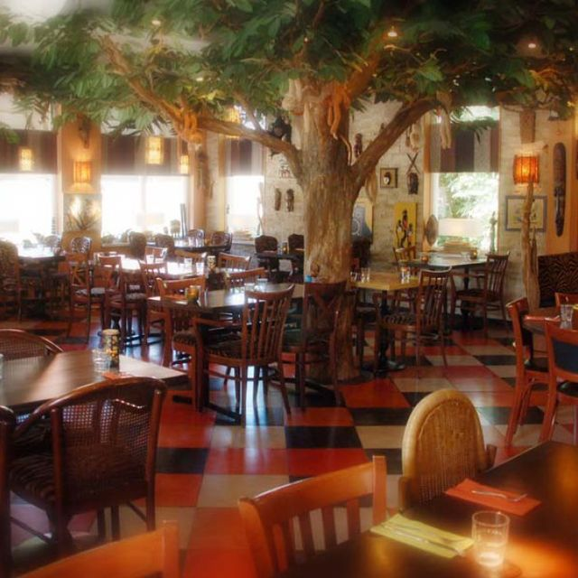
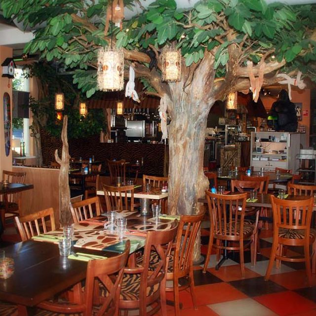
Op kinderen is gerekend
Uw kinderen mee uit eten nemen is meestal niet vanzelfsprekend. Bij Restaurant Aap wel: wij vinden het gezellig als u uw kind(eren) meeneemt.
- Speeljungle Kinderen vanaf 3 jaar kunnen helemaal losgaan, met een klimtoestel, Playstation en een loungehoek met dvd-speler.
- Oppas aanwezig Niet constant uw kind achterna: er is een oppas die met de kinderen knutselt.
- Kindermenu Drie gangen voor 18,50, van popcorn en pannenkoek tot een kinderijsje met vruchtjes.
Alvast een idee van de sfeer
Van de serre en het terras tot de keuken en de borden.
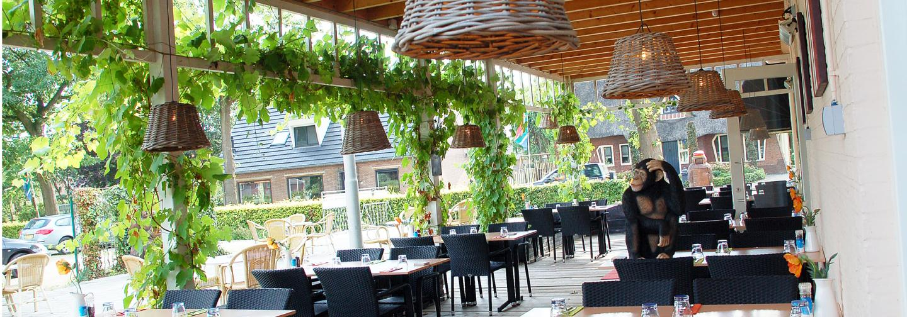
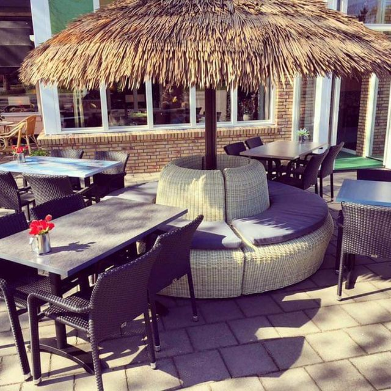
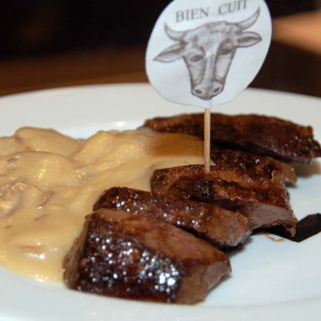
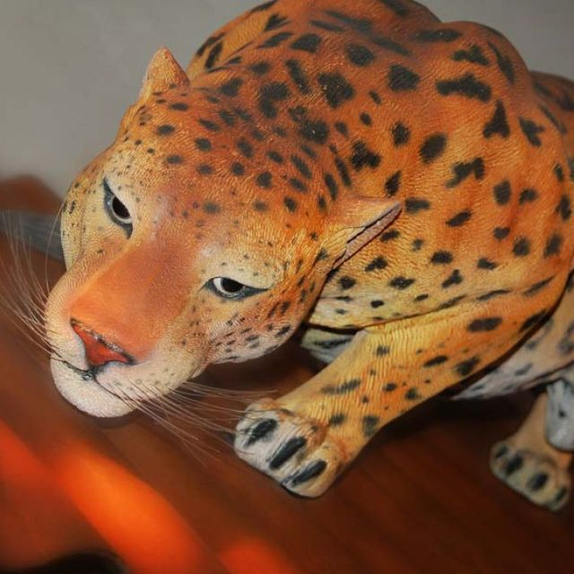
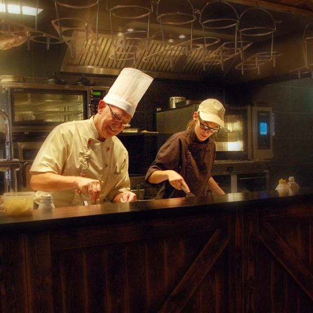
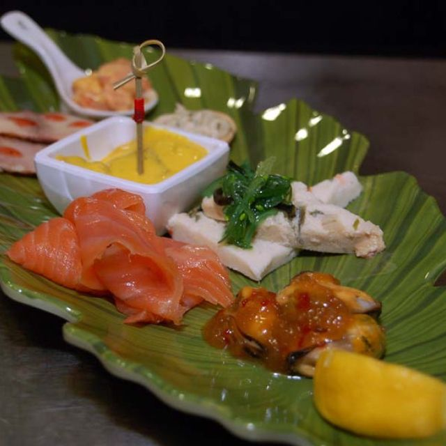
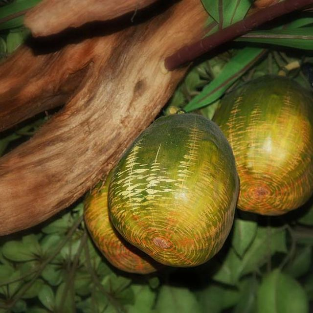
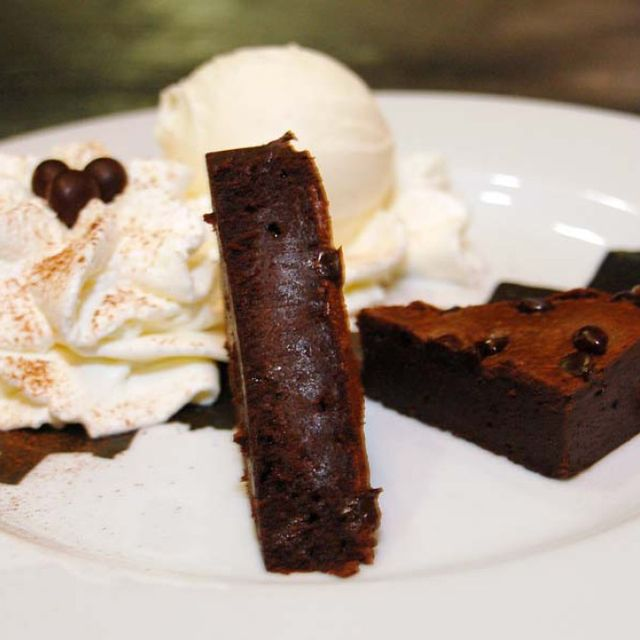
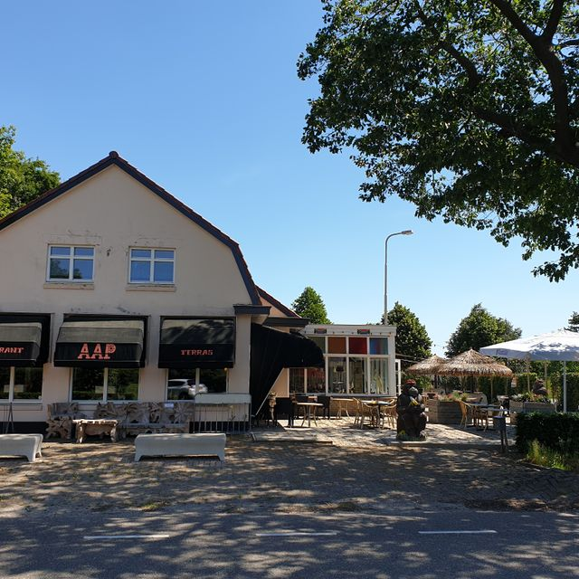
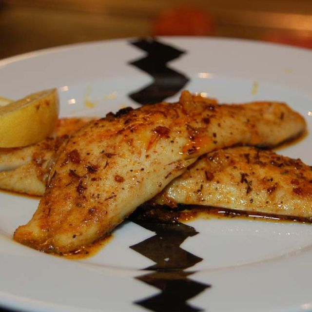
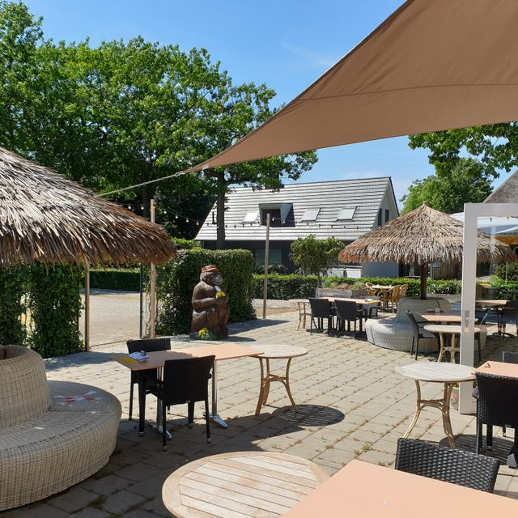
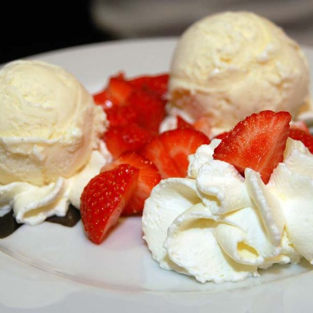
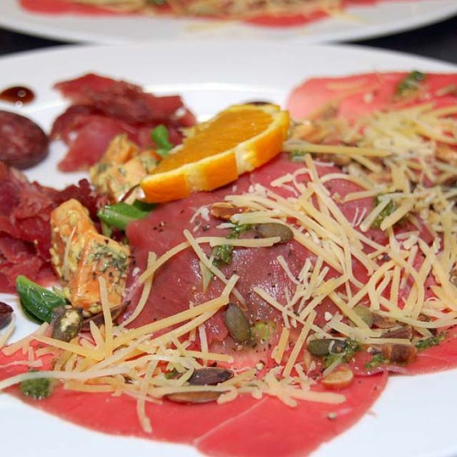
Reserveer uw tafeltje
Ook als u niet zo'n avonturier bent op smaakgebied: er zijn heerlijke vis-, vlees- of vegagerechten om uit te kiezen. Bel, mail of stuur een bericht.
Route naar Restaurant Aap
Vanuit het centrum van Alphen
Sla vóór de witte kapel linksaf de Stationstraat in. Houd aan het einde van de Stationstraat links aan naar de St. Janstraat. U vindt ons restaurant ruim 1 kilometer verder aan de linkerkant.
Vanaf Baarle-Nassau
Sla bij de rotonde rechtsaf en volg de borden 'Poppel'. Sla na 1,2 kilometer linksaf richting Alphen. U vindt ons restaurant na 3,2 kilometer aan de rechterkant.